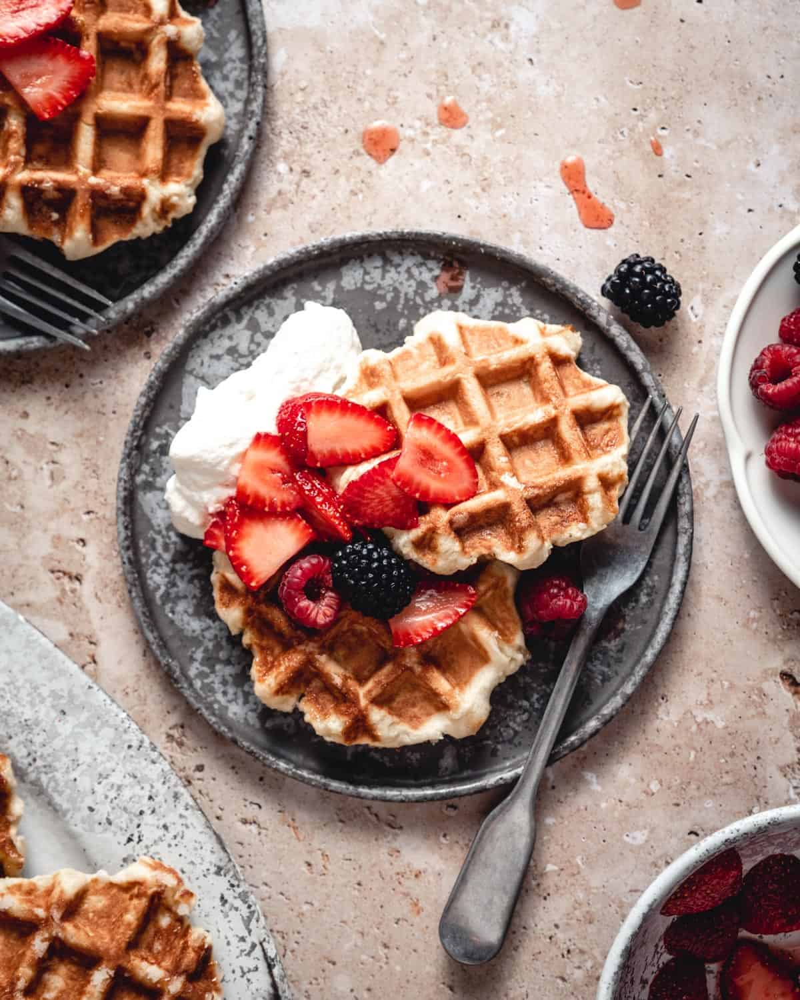

Jefferson Liege Waffles

The true and Jeffersonian waffle
Description of the dish:
Ingredients
- Confectioners' Sugar
- Syrup
- Fresh Fruit
- Cream
- etc...
Steps
- In the bowl of a stand mixer fitted with the paddle attachment, add the milk, water, and yeast.
- Stop the mixer and add in the eggs, honey, and vanilla. Mix until combined. Add in 2 cups of flour and mix until the flour is hydrated and mostly mixed in. Stop the mixer, scrape down the paddle attachment, and switch to the dough hook.
- Add in the salt and 1/2 cup of flour at a time with the mixer on low until all of the flour is combined.
- Remove the dough from the bowl and place it on a lightly floured board. Flatten the dough out into a rectangle and spread out 1 1/2 cups of pearl sugar.
- etc...